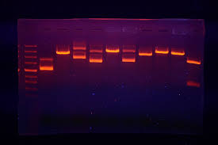
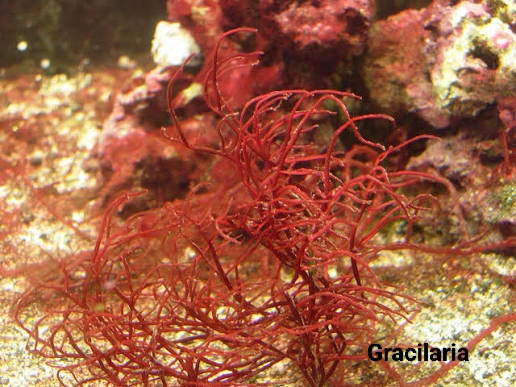
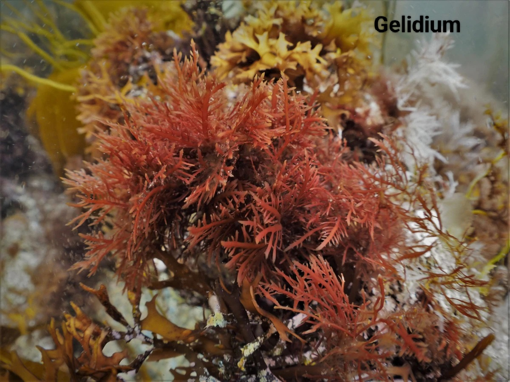

An agarose gel is a gelatin-like substance made from agarobiose, a carbohydrate extracted from seaweed.
To perform agarose gel electrophoresis, you begin by mixing a weighed amount of agarose powder with a specific volume of running buffer, such as TAE or TBE, in an Erlenmeyer flask. This mixture is heated in a microwave using short bursts and gentle swirling until the solution becomes completely clear and all agarose particles have melted.
After cooling the liquid to approximately 50°C–60°C, a fluorescent nucleic acid stain is mixed in, and the solution is poured into a casting tray equipped with a comb to create sample wells. The gel is left undisturbed at room temperature for about 20 to 30 minutes until it solidifies into a firm, slightly opaque matrix.
Once the gel is fully set, the comb is carefully removed, and the casting tray is placed into an electrophoresis chamber filled with the same running buffer until the gel is completely submerged.
DNA samples are then prepared by mixing them with a dense loading dye, which helps the samples sink into the wells during loading.
A molecular weight ladder is injected into the first lane to serve as a size reference, followed by the experimental samples in subsequent wells.
The chamber lid is closed, and electrical leads are attached to a power supply, ensuring the negative black lead is near the wells so that the negatively charged DNA molecules migrate toward the positive red electrode.
The power supply is turned on, usually between 80V and 120V, and the run continues until the tracking dye moves across most of the gel length.
Finally, the power is turned off, and the gel is transferred to a UV transilluminator or a blue-light imaging system to visualize and capture images of the separated DNA bands.